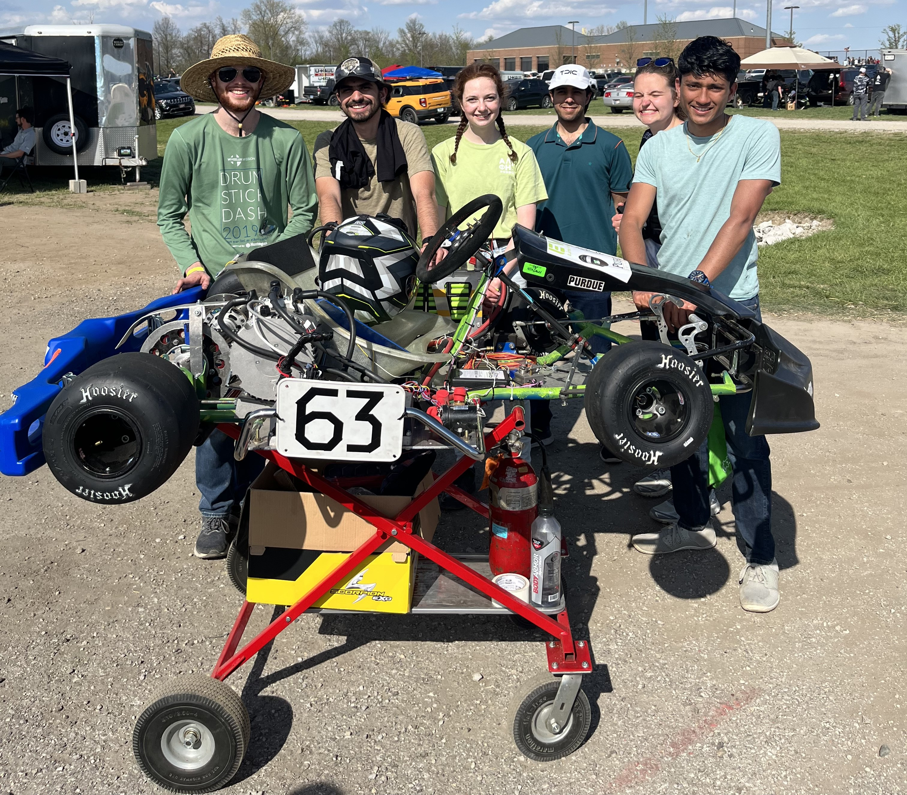
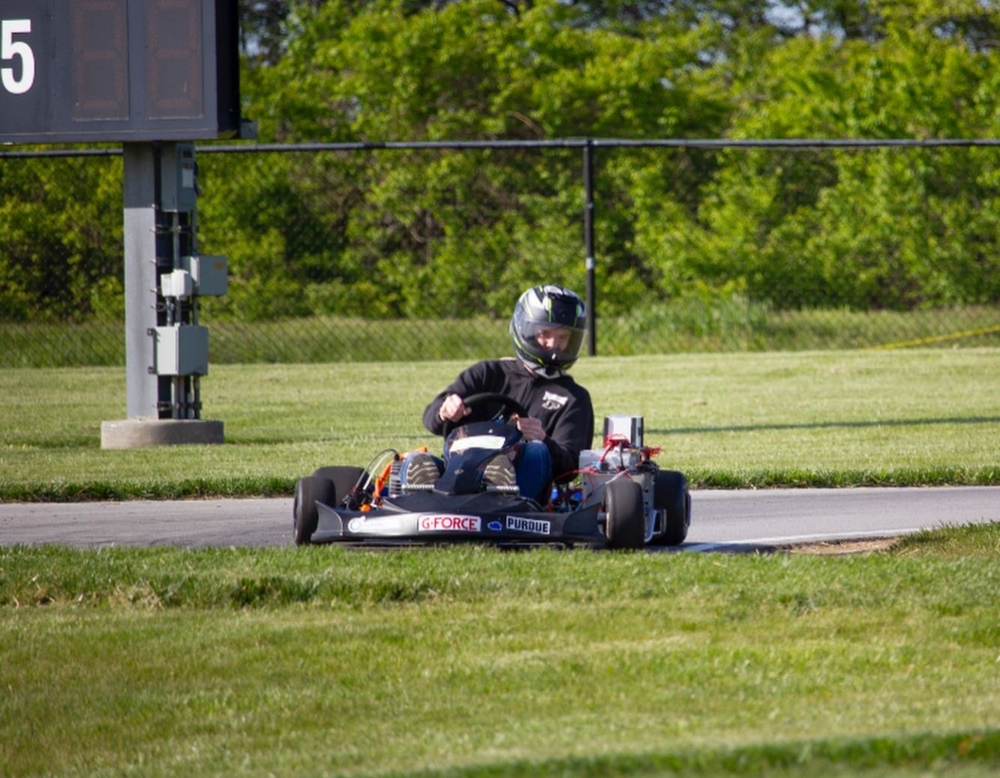

Projects
I like working on projects and plan to expand this page in the future. My favorite project was leading a team to convert a gasoline go-kart into an EV during my undergrad.


I am currently working on [untitled bike app], and I hope to release the beta version by the end of September.